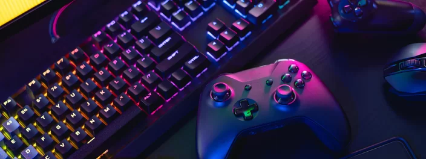

Marco Legal dos Jogos Eletrônicos será votado hoje na câmara
Postado dia 30/08/2022 por MARCELO JUNIORHoje (30) será um dia bem interessante para quem acompanha o cenário de videogames no Brasil, já que a nossa Câmara dos Deputados votará o Marco Legal dos Jogos Eletrônicos, o projeto de Lei 2796/2021, que pode trazer um gigantesco impacto e resolver alguns dos mais antigos problemas do meio. Entenda a seguir!
A ideia da Lei é aumentar a segurança jurídica ao mesmo tempo em que estabelece novas diretrizes para o mercado, regulamentando quem trabalha no ramo de videogame, fliperama, eSports e outros, e tentando desenvolver mais ainda o setor, agora separando de vez e explicitamente as máquinas de caça-níquel dos videogames, um ponto-chave da proposta.
Estranhamente, o projeto (ainda passível de alterações) não cita aplicativos de celular, ainda que o mercado mobile represente cerca de 47% do faturamento nacional, enquanto os consoles ficam com 29% e o PC com 24%. A ideia é vincular o Marco Legal dos Jogos Eletrônicos à Lei de Informática, equiparando a tributação desses produtos.
Caso a lei seja aprovada, torna-se livre a fabricação, comercialização, importação e desenvolvimento dos jogos no país, sendo obrigação do Estado apoiar a formação de profissionais e indústria. De acordo com a Associação Brasileira das Desenvolvedoras de Jogos Digitais, hoje já temos mais de 1000 estúdios nacionais de criação de games, e tanto os criadores como os consumidores devem se beneficiar disso.
38% dos brasileiros jogam videogames diariamente, aponta pesquisa
Postado dia 30/08/2022 por MARCELO JUNIOR Você joga videogames diariamente? Se sua resposta for sim, você faz parte dos 38% de brasileiros que escolhem esta atividade como forma de entretenimento todos os dias, segundo aponta o mais recente estudo realizado pela GfK, empresa especializada em estudos de mercado.
De acordo com o levantamento, este número representa um aumento na quantidade de pessoas que jogam todos os dias em relação ao ano passado. Deste total, os Millennials são a geração mais ativa, representando 42% do público.
Também houve um aumento na venda de produtos relacionados a games. O Brasil é o maior na América Latina, com 86% do público preferindo celulares para jogar, 74% utilizando computadores e, por último, 56% dando preferência a consoles.
Ainda segundo os dados, 89% dos lares brasileiros utilizam smartphones; 64% têm ao menos um laptop; e 69% contam com pelo menos uma Smart TV. No resto da América Latina, estes números são de 83%, 59% e 64%, respectivamente.
O brasileiro também têm gêneros de games preferidos definidos, de acordo com os dados da GfK. Títulos de ação e aventura são procurados por 48% dos usuários. Jogos de tiro aparecem em segundo lugar, com 42%, enquanto os de estratégia ficam em terceiro, com 40%.
Varejo de jogos mais caro em 2022
Em termos de vendas e preços, 2022 tem representado um desempenho abaixo da média, quando comparado a anos anteriores. "O mercado global está enfrentando uma desaceleração e isso se deve muito à alta dos preços, que vem sendo sentida desde meados de 2020”, comenta Ricardo Moura, diretor de Soluções da GfK no Brasil.
O preço médio dos consoles, por exemplo, teve um aumento significativo desde antes da pandemia de Covid-19, em 2019, quando estava em uma média de R$ 1.621. Até maio de 2022, o valor médio era de R$ 3.114.
Por fim, o mercado de smartphones também sofreu em 2022, com uma queda de -18% no total de unidades vendidas no segundo trimestre deste ano. Mas os modelos 5G tiveram um aumento de 199% no mesmo período. Vale lembrar que outro estudo neste ano indicou que brasileiros querem o 5G, embora não conheça bem a tecnologia.